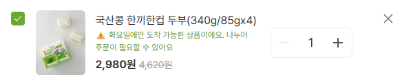
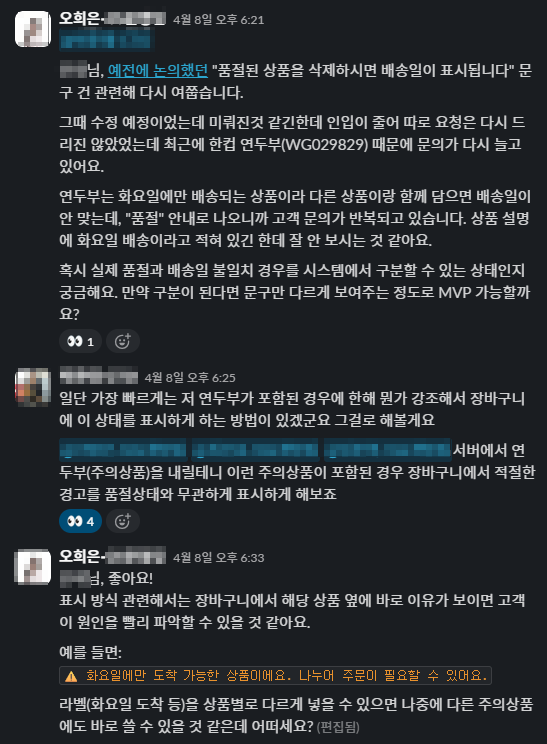
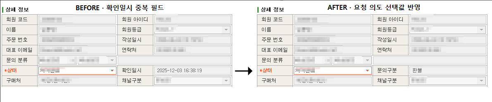
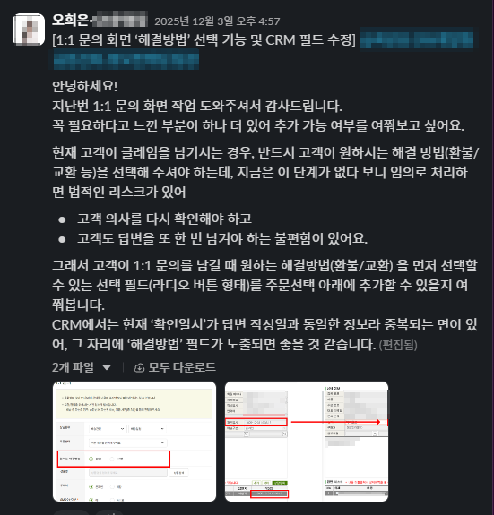
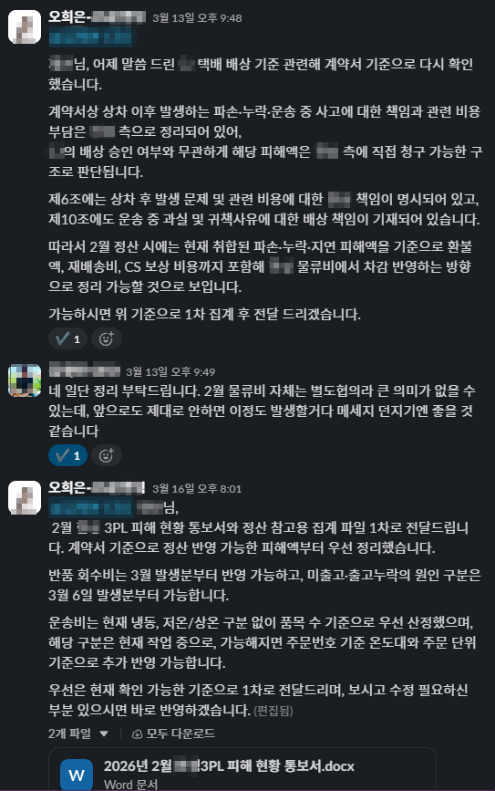
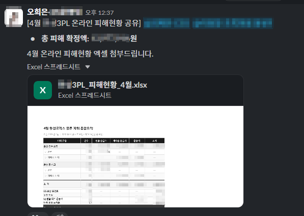
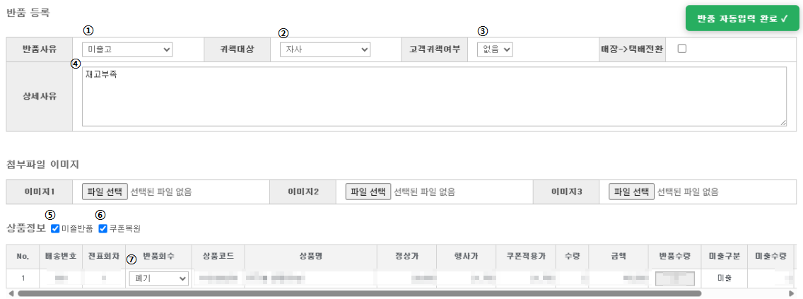
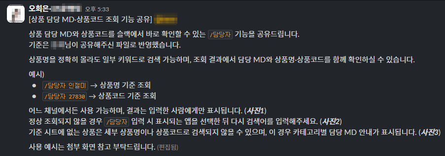

배송 제약 VOC를 Fail-soft UX로 전환 — 개발팀 제안·당일 구현·반복 문의 0건 수준
Problem
배송 가능일이 다른 상품이 장바구니에 함께 담기면 주문이 차단됐지만, 고객에게는 그 이유가 충분히 안내되지 않았습니다. 고객은 이를 품절이나 시스템 오류로 인식했고, 동일한 문의가 일 6~10건 반복됐습니다.
핵심 문제는 고객의 이해 부족이 아니라, 주문이 막히는 시점에 시스템이 이유를 설명하지 못하는 UX 구조에 있었습니다.
A Fail-soft UX 설계
모든 예외 조건을 시스템에서 완벽히 분기하기는 어려웠기 때문에, API 응답값으로 판단 가능한 조건만 남겨 최소 실행 단위의 개선안을 설계했습니다.
고객이 주문 불가 이유를 이해하고 흐름을 이어갈 수 있도록 장바구니 내 subtext 안내 구조를 직접 기획했고, 데이터 자료와 함께 개발팀에 제안했습니다. 제안은 즉시 수용되어 당일 구현됐습니다.
B 운영 기준 확산
해당 subtext 구조는 이후 유사한 안내 케이스에도 적용 가능한 기준으로 확장됐습니다. 단순 문구 추가가 아니라, 고객이 막히는 시점에 필요한 정보를 제공하는 유사 안내 케이스로 확장 적용됐습니다.


Insight
· 같은 정보를 충분히 안내하지 않을 때, 고객은 시스템 오류로 인식합니다.
· 모든 예외를 분기하기보다, 막히는 시점에 이유를 보여주는 UX가 더 실용적입니다.
· 고객 접점에서 발견한 패턴도 운영 기준이 있으면 제품 표준으로 확장됩니다.
고객 의도 기반 환불·교환 입력 구조 재설계 — AS 재확인 왕복 95%+ 감소
Problem
환불·교환 사유가 자유 텍스트로 입력되던 구조였습니다. 고객의 진짜 의도가 자유 텍스트 안에 묻혀 응대 단계에서 다시 확인해야 하는 왕복이 누적되고 있었습니다.
고객이 본인 의도를 정확히 풀어 쓰지 않으면 처리 담당자는 안전한 선택을 위해 추가 확인을 해야 했고, 그만큼 리드타임이 길어졌습니다.
A 자유 텍스트 → 필수 선택값 구조화
고객 의도를 빈도순으로 분석해, 의도 기반 필수 선택값으로 입력 필드를 재구성했습니다. 입력 단계에서 의도가 정해지니 응대 단계의 재확인이 필요한 시점이 사라졌습니다.
B 중복 DB 필드 활용 · 개발 범위 최소화
새 컬럼을 만들지 않고 중복 활용 가능한 DB 필드를 활용하는 스펙을 직접 설계해 개발 범위를 최소화했고, 빠르게 반영 가능한 형태로 유관부서와 협의했습니다.
C 결과
입력 단계에서 의도가 구조화되니 응대 단계의 재확인 왕복이 95% 이상 감소했고, 환불·교환 처리 리드타임이 단축됐습니다.



Insight
· 응대 단계에서 발생하는 재확인 비용은 대부분 입력 단계의 구조 문제에서 시작됩니다.
· 자유 텍스트는 유연해 보이지만, 실제로는 의도를 흐리는 구조입니다.
· 큰 개발 변경 없이 기존 필드 활용 방식만 다시 설계해도 운영 비용을 빠르게 줄일 수 있습니다.
카카오VX 400+ 제휴사 정책 정보 재정리 — 필요한 항목을 같은 순서로 찾고 판단할 수 있도록
Problem
골프장 400여 곳의 취소 정책·위약금 기준·동반자 변경 규정이 제각각이었습니다. 어드민에는 데이터가 있었지만, 제휴사별 정책 전달 형식과 표현이 달라 담당자가 바로 판단할 수 있는 기준으로 정리되어 있지 않았습니다.
동일 유형 문의에도 팀원마다 안내가 달라지는 상황이 발생했고, 오안내와 재문의가 반복되며 처리 품질 편차도 함께 커졌습니다.
A 400여 곳 정책 정보 재정리 · 공통 확인 항목 구성
400여 개 제휴 골프장의 정책을 중요도순으로 재구조화하고, 예약·취소·위약·동반자 변경 기준을 유형별로 분류했습니다. 반복 문의가 발생하는 구간을 VOC 기준으로 다시 정리하고, 담당자가 같은 순서로 확인할 수 있도록 운영 가이드와 Knowledge Base를 재정비했습니다.
B 정책 최신화 흐름 정리
정책 변경이 발생할 때는 어드민 기준이 최신 상태로 반영되도록 내부 공유 흐름을 정리해, 담당자들이 항상 같은 최신 기준을 참조할 수 있도록 했습니다.
C 결과
동일 유형 문의에 대한 확인 항목 정리가 이루어졌고, 정책 해석 차이로 인한 오안내와 재문의 가능성을 줄였습니다. 제휴사별 정책이 개인 숙련도에 의존하지 않고 팀 전체가 같은 순서로 확인할 수 있게 되었으며, 처리 품질 편차를 줄이는 데 기여했습니다.
Insight
· 흩어진 정보는 자동으로 기준이 되지 않습니다 — 누군가 의도적으로 구조화해야 합니다.
· 정책 정보 구조화는 내용을 하나로 통일하는 일이 아니라, 서로 다른 정책을 같은 방식으로 찾고 판단할 수 있게 만드는 일입니다.
· 파트너 운영에서 큰 비용 중 하나는 응대 시간보다 기준 부재로 인한 해석 편차입니다.
외부 파트너 계약 기반 정산 구조 재정의 — 배상 회수액 14.7배 개선
Problem
외부 파트너 귀책으로 발생한 배송 사고·물류 손실이 있었지만, 배상은 파트너사 관행에 따라 제한적으로 처리되고 있었습니다. 사고는 반복되는데 책임 기준과 비용 반영 구조가 명확하지 않아, 월 배상 회수액은 50만 원 수준에 머물러 있었습니다.
약관·계약 영역은 제가 처음 접하는 도메인이었지만 멈추지 않았습니다.
A 택배 표준약관 검토 · 근거 기반 협상 구조로 전환
택배 표준약관을 기준으로 파손·분실·배송 사고 시 청구 가능한 조건을 정리했습니다. Claude로 쟁점을 먼저 구조화하고, NotebookLM으로 원문 근거를 교차 확인해 사진·접수 기록 등 최소 증빙이 있을 경우 파트너에게 청구 가능한 기준을 세웠습니다. 기존 관행 중심의 처리 방식을 근거 기반 협상 구조로 전환했습니다.
B 물류 계약서 선공제 조항 확인 · CEO 보고·공통 운영 기준 정리
물류 계약서를 다시 검토하는 과정에서 기존 운영에서 활용되지 않던 선공제 조항을 확인했습니다. 해당 조항을 근거로 피해 유형, 비용 항목, 정산 기준을 재정리했고, CEO 보고를 거쳐 공통 운영 기준으로 정리했습니다.


Insight
· 관행은 보통 기준이 아니라, 합의가 없는 상태의 기본값입니다.
· 처음 접하는 도메인이라도 원문·증빙 기준을 만들면 협상의 주도권을 확보할 수 있습니다.
· 손실 통제는 응대가 아니라 정산 구조에서 시작됩니다.
대량 미출고·재배송 이슈 대응 자동화 — 1,151건 처리와 일별 운영 루틴 정착
Problem
3PL 전환 초기, 대량 배송 지연·미출고 이슈가 갑작스럽게 발생하면서 AS/재배송·반품 등록을 짧은 시간 안에 대량으로 처리해야 했습니다.
당시 처리 과정에서는 동일 항목을 반복 입력해야 했고, 처리 건수가 늘어날수록 입력 피로도와 기준값 오류 가능성이 커졌습니다. 특히 귀책 대상, 처리 사유, 보상 기준처럼 후속 정산·집계에 연결되는 값은 한 번 잘못 입력되면 운영 데이터 전체가 왜곡될 수 있었습니다.
또한 상품 문의나 품질 이슈 처리 시 담당 MD와 상품코드를 확인하려면 매번 엑셀이나 별도 자료를 열어야 했고, 반복 조회와 이관 과정에서 처리 시간이 누적됐습니다.
A 대량 이슈 처리 자동화 — 7단계 → 1단계
3PL 전환 초기 대량 지연·미출고 이슈가 발생했을 때, 주말 동안 Claude의 도움을 받아 Chrome Extension 기반 반복 처리 자동화 도구를 구현했습니다.
AS/재배송·반품 등록 시 반복 입력되는 주요 항목이 단축키 한 번으로 자동 입력되도록 설계했고, 기존 주문 확인, 값 입력, 사유 선택, 상태 변경 등 여러 단계를 반복하던 처리 동선을 7단계에서 1단계로 줄였습니다.
해당 구조로 재배송·반품 등 후속 처리 1,151건 이상을 수행했으며, 이후 일별 미출고 처리 업무에도 동일 구조를 적용해 반복 운영 루틴으로 정착시켰습니다.
다만 모든 단계를 자동화하지는 않았습니다. 귀책 판단, 예외 케이스 확인, 최종 등록처럼 비용·정산·고객 안내에 영향을 주는 구간은 담당자가 직접 확인하도록 남겨 오류 리스크를 낮췄습니다.


B Slack 기반 내부 조회 구조 구축
상품 문의나 품질 이슈 처리 시 담당 MD와 상품코드를 확인하는 과정도 반복적으로 발생했습니다. 기존에는 엑셀이나 별도 자료를 열어 검색해야 했기 때문에, 문의 이관 전 확인 시간이 계속 누적됐습니다.
Slack API와 Apps Script를 활용해 /담당자 슬래시 커맨드 조회 인터페이스를 구축했습니다. 상품명 일부 또는 상품코드를 입력하면 담당 MD와 상품코드가 즉시 조회되고, 결과는 입력자에게만 노출되도록 구성했습니다.


C AI를 실무 파트너로 활용
Claude, ChatGPT, NotebookLM은 운영 기준 정리, 자동화 로직 설계 보조, 디버깅, 리스크 표현 검토, VOC 분류와 문서 초안 작성에 활용했습니다.
AI가 만든 결과를 그대로 사용하는 방식이 아니라, 실제 정책·원문·운영 데이터와 대조해 검수하는 방식으로 사용했습니다. 이 활용성을 인정받아 AI 도구를 공식 업무 도구로 승인받아 실무에 적용했습니다.
Result
반복 입력 업무는 7단계에서 1단계로 줄였고, 대량 지연·미출고 이슈 상황에서 AS/재배송·반품 1,151건 이상을 처리하는 데 활용했습니다. 이후 일별 미출고 처리에도 동일 자동화 구조를 적용해, 단발성 대응이 아니라 반복 운영 프로세스로 정착시켰습니다.
내부 조회 업무는 Slack 명령어 기반으로 전환해 담당 MD·상품코드 확인 동선을 단축했습니다.
자동화 대상과 사람의 판단이 필요한 구간을 분리해, 처리 속도뿐 아니라 기준값 일관성, 귀책 분류 정확도, 운영 데이터 정합성까지 함께 개선했습니다.
Insight
· 자동화의 목적은 속도만이 아니라, 대량 이슈 상황에서도 기준이 흔들리지 않게 만드는 것입니다.
· 모든 단계를 자동화하지 않고 리스크 구간은 사람에게 남기는 것이 운영 안정성을 만듭니다.
· 단발성 위기 대응에서 끝내지 않고, 이후 반복 운영에 재사용 가능한 구조로 정착시키는 것이 중요합니다.